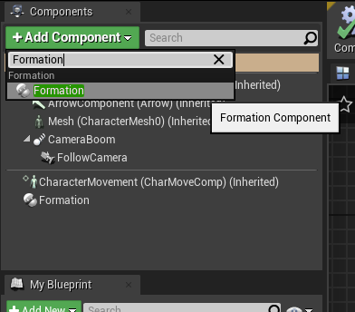
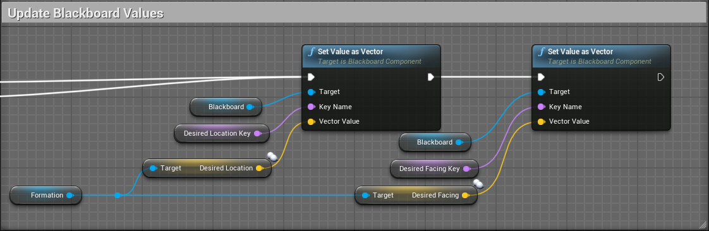

The Formation System allows you to easily add formations to your game. Make AI characters follow you in formation, make groups move in formation, or use for any situation where you need characters to move relative to each other such as cut-scenes or scripted events.
Version 2 of the Formation System has been completely rewritten to accomodate multiplayer and add additional requested features.
The example project shows some example ways in which the system can be used. This is by no means an exhaustive list. Let your imagination decide your limits.
Link: Example Project
An open source tool is provided to create custom formations, and export JSON that can be easily loaded by the Formation System.
Link: Formations Tool
Additional video tutorials will be uploaded to CodeSquirl YouTube channel.
1. In the Unreal Editor, click Edit > Plugins

2. Search for the Formation System plugin in the Plugins Browser.

3. Check the Enabled box to enable the plugin.
If you have a C++ project and want to interact with the Formation System from code, add the FormationSystem module to your .build.cs file.
PublicDependencyModuleNames.AddRange(new string[] { "Core", "CoreUObject", "Engine", "InputCore", "HeadMountedDisplay", "FormationSystem" });
PrivateIncludePathModuleNames.AddRange(new string[] { "FormationSystem" });
Now you're ready to use the Formation System. Let your imagination run wild.
Using the Formation System is as simple as adding the Formation Component to any actors that you want to be able to add to formations, and adding the Formation Manager to your level.
Below is a short description of a typical workflow to create formations and get them into your game.
For a more detailed explanations, see the relevent videos on the CodeSquirl YouTube channel.
The easiest way to create formations is to use the Formations Tool, export them as JSON, and import them into a DataTable using the Unreal Editor.
Add the Formation Manager to any level that uses the Formation System. You can drag it from the 'Place Actors' window into your level.

You can set options on Formation Manager instance. To automatically load formations, select a Formations data table from the Formation Manager instance.
Add the Formation Component to any actor you want to be a part of a formation group. Add the component in the same was as any other Actor Component.
The Formation Component exposes two variables that can be used by AI to determine where they are supposed to be (DesiredLocation), and which way they're supposed to be facing (DesiredFacing) to be considered "in formation".
You can periodically push these into your AI blackboard and use standard tasks such as MoveTo and SetFacing to use them. This is probably the least well defined part of this process because it is entirely up to you how your AI uses this information.
A simple AI is provided in the Example Project to illustrate how to use this.